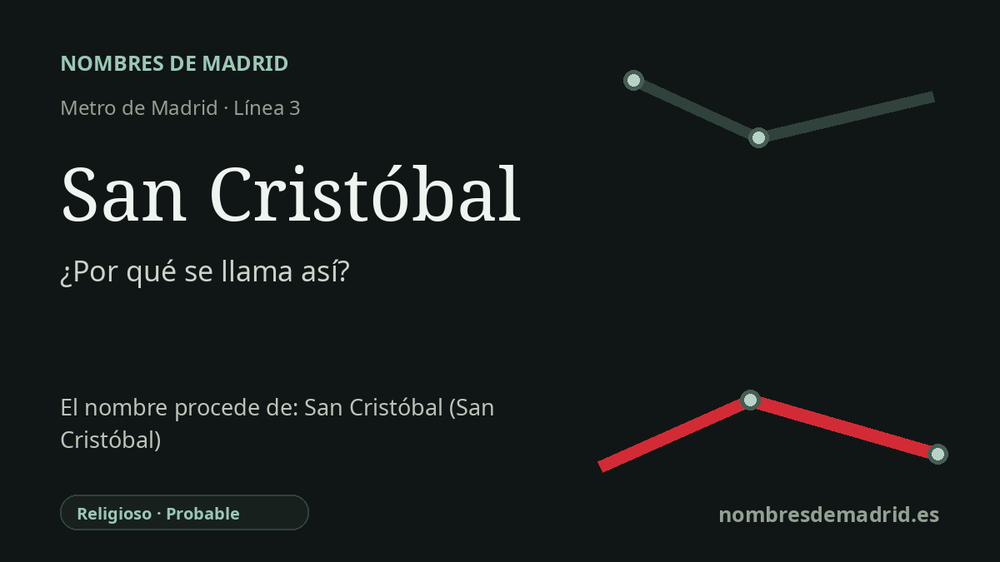

Publicado el · Investigación de Nombres de Madrid · Cómo verificamos cada origen · 6 fuentes consultadas
Respuesta rápida
La estación de San Cristóbal toma su nombre del barrio vecino de San Cristóbal de los Ángeles, en Villaverde. El nombre remite a san Cristóbal, tradicionalmente vinculado a los viajeros, mientras que la historia urbana moderna del barrio está ligada a una gran actuación de vivienda social de los años cincuenta y sesenta sobre los terrenos de la antigua fábrica de ladrillos La Norah.
La historia del nombre
La estación de Metro llamada San Cristóbal toma su nombre del barrio al que sirve: San Cristóbal de los Ángeles, en el distrito madrileño de Villaverde. Cuando la línea 3 se prolongó de Legazpi a Villaverde Alto, la Comunidad de Madrid describió esta parada como la estación situada frente a San Cristóbal de los Ángeles. La estación abrió el 21 de abril de 2007 y dio al barrio una conexión directa en Metro con el centro de la ciudad.
Detrás del nombre de la estación hay un topónimo religioso. San Cristóbal es el santo cuyo nombre, de origen griego, suele explicarse como 'portador de Cristo'. En la tradición cristiana aparece como la figura gigantesca que cruza un río peligroso llevando al Niño Jesús, de ahí su asociación popular con viajeros, transportistas y conductores.
El lugar que hay detrás del nombre es mucho más reciente que el santo. San Cristóbal de los Ángeles surgió a finales de los años cincuenta y durante los sesenta como una gran actuación de vivienda social en el borde sur de Madrid. La Fundación Arquitectura COAM documenta el poblado dirigido como una obra proyectada en 1958, con ejecución entre 1959 y 1967 por un equipo de ocho arquitectos encabezado por Eugenio Casar Estellés.
El barrio se levantó sobre más de 43 hectáreas que habían pertenecido a la fábrica de ladrillos La Norah. Ese pasado industrial sigue siendo visible en la chimenea de ladrillo conservada, hoy entendida como hito testimonial del barrio. La documentación municipal madrileña vincula además la actuación a la Gerencia de Poblados Dirigidos y al Instituto Nacional de la Vivienda, con 6.077 viviendas subvencionadas construidas por fases desde 1959.
La lectura mejor apoyada es, por tanto, doble: la estación se llama directamente por el barrio, y el nombre del barrio contiene la advocación religiosa de San Cristóbal. La redacción actual de datos acierta en lo esencial, pero conviene ajustar cifras y cronología: las fuentes más autorizadas dan 6.077 viviendas subvencionadas en conjunto, 4.066 para el poblado dirigido principal, y una secuencia de proyecto y obra de 1958-1959 y 1959-1967, no simplemente 1958-1965. No se ha encontrado un acta primaria de denominación que indique quién eligió el nombre del barrio ni por qué se añadió 'de los Ángeles'.